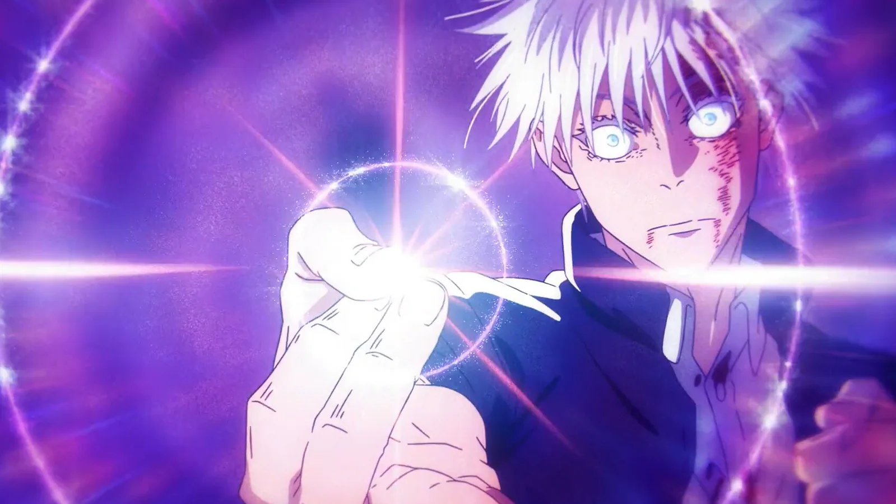

Teoria
Gojo pode voltar?
Essa é uma das teorias mais fortes entre os fãs de Jujutsu Kaisen.
Muita gente acredita que ainda existem pistas e possibilidades na história para o retorno do Gojo.
Mesmo sem confirmação, o impacto do personagem é tão grande que essa teoria continua viva até hoje.
⬅ Voltar